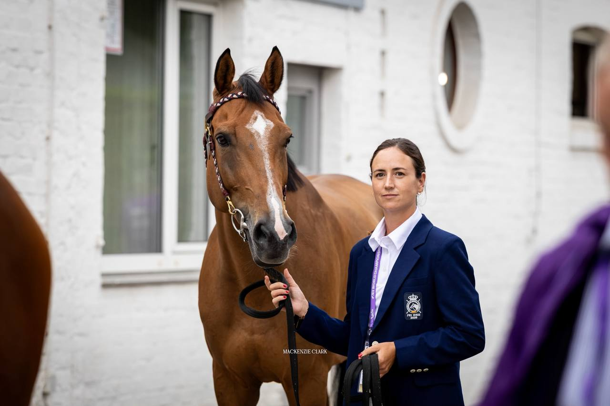

España pasa la revisión veterinaria del Mundial de salto con sus cinco binomios y 'Tornado VS' supera la reinspección
España ya tiene a sus cinco binomios en disposición de saltar en el Campeonato del Mundo de Aachen 2026.

Cesión editorial (Telegram)
España ya tiene a sus cinco binomios en disposición de saltar en el Campeonato del Mundo de Aachen 2026. La expedición nacional superó al completo la primera inspección veterinaria de la disciplina, aunque el trámite se le hizo largo a Armando Trapote: su 'Tornado VS' fue uno de los dos caballos que el lunes por la tarde no obtuvieron el visto bueno inmediato del jurado y quedaron citados para una segunda vuelta. En la reinspección de este martes por la mañana, el caballo fue declarado apto y España respiró.
El otro caballo llamado a repetir fue 'Polonis L', de la danesa Caroline Rehoff Pedersen, que también recibió el aprobado. Con esos dos veredictos, el cuadro del Mundial de salto queda intacto: todos los caballos presentados están habilitados para competir.
Los cinco de la selección
El equipo español, con la lista ya cerrada por la Real Federación Hípica Española, lo forman Julio Arias Cueva con 'Filou du Manoir', Alberto Márquez Galobardes con 'Kelly', Imma Roquet Autonell con 'Irivola del Maset', Iván Serrano Sáez con 'Rain Man' y el propio Armando Trapote con 'Tornado VS'.
Serrano es la incorporación de última hora. Entró en la convocatoria en sustitución de Pilar Cordón, baja por una lesión de hombro sufrida durante el CSN del Club Hípico Astur, en Gijón. El aragonés llega en un momento dulce con 'Rain Man': la pareja se llevó el Gran Premio de Casas Novas sin tocar un solo palo y en 40,58 segundos.
Hoy se pisa la pista, mañana empieza lo serio
La jornada de este martes es de rodaje. El programa oficial reserva el Estadio Principal de la Soers de 09:00 a 15:45 para una sesión de entrenamiento abierta a todos los jinetes, sobre un recorrido de unos ocho obstáculos que permite a los caballos tomar la medida al escenario antes de que empiece a contar.
El campeonato arranca de verdad el miércoles 19, de 09:30 a 17:20, con el Turkish Airlines-Prize, la prueba de velocidad con faltas convertidas en segundos que abre la clasificación individual. El jueves 20 llega la primera manga del Mercedes-Benz Prize (09:00 a 17:10) y el viernes 21, ya de noche y bajo focos, se corre la segunda (18:50 a 22:50): ahí se reparten las medallas por equipos. El título individual se decide el domingo 23, de 14:20 a 17:20, en el LONGINES-Prize, a dos mangas sucesivas.
En juego hay algo más que el podio: Aachen empieza a repartir las primeras plazas por naciones para los Juegos Olímpicos de Los Ángeles 2028.
— Redacción de Hípica al Día